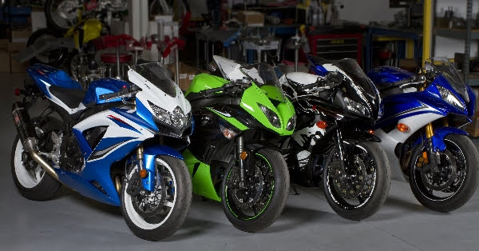
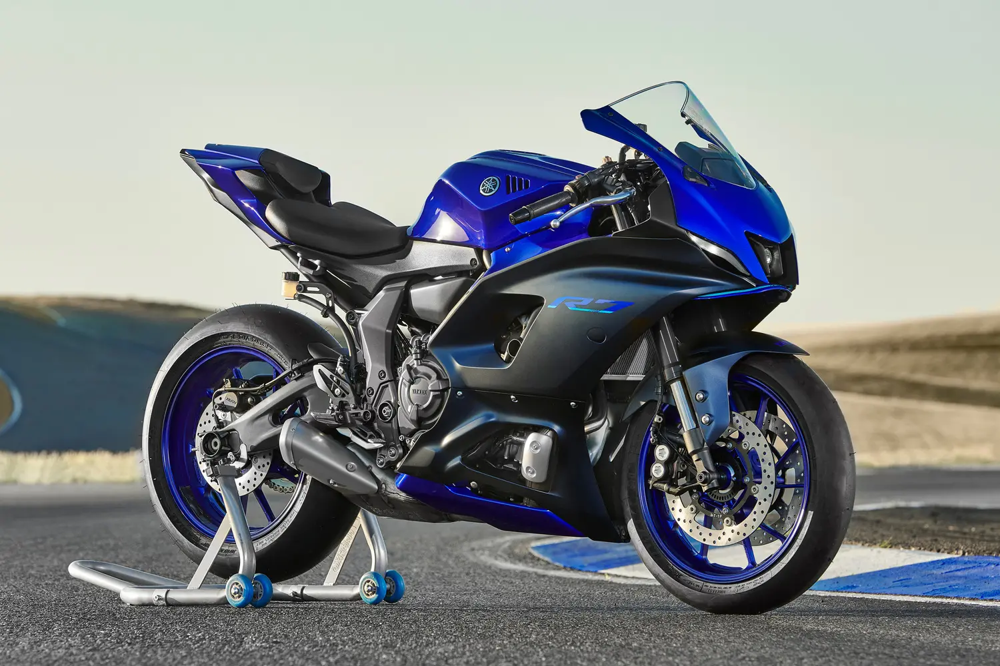
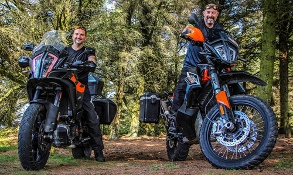

Мотокрос спорт для любителів екстриму, дає можливість показати якості перегонів мотоцикла, уміння долати різкі повороти, перешкоди, трампліни. Для участі в перегонах вам знадобиться особливий мотоцикл — кросовий. Це не звичайний міський, а спеціальний, пристосований саме для змагань. Він розрахований на стрибки бездоріжжя. У кросового мото немає фар, покажчиків поворотів, спідометра, номерних знаків. Зате якнайміцніша, надійніша підвіска. Якщо ви не знаєте, який кросовий мотоцикл кращий, можливо, вам допоможуть визначитися наші рекомендації.
При участі в перегонах треба відповідати вимогам по масі, розмірам, технічним характеристикам. Для купівлі кросової мототехніки вам не потрібні права, її ніде не реєструють. При виборі мотоцикла вам треба розглянути такі його характеристики, як:
- виробник;
- особливості двигуна;
- потужність;
- надійність;
- стійкість;
- вартість.
Дивитесь у цьому матеріалі:
Виробники кросових мотоциклів
Купуючи мотоцикл, поцікавтеся, де він зроблений. Найдешевший не гарантує вам безпеку . Пам'ятайте, що від якості залежить ваше життя, тому не ризикуйте, не економте на нім, придбаваючи замість відмінного байка металобрухт.
Краще купувати мототехніку відомих брендів, що надійних зарекомендували себе на ринку при змаганнях. Найбільш відомими залишаються з року в рік компанії Suzuki, Honda, Yamaha, Kawasaki, KTM, що постійно очолюють рейтинг кросових мотоциклів.

Yamaha
Японські мото Yamaha характеризуються прекрасним сучасним дизайном, у них потужний двигун, який витримає велике навантаження. Фахівці компанії постійно удосконалюють вироби, змішуючи потужність з відмінною підвіскою ці байки постійно лідирують по кількості продажів. Це мото добре пересувається по бездоріжжю.
Yamaha YZ250 з об'ємом двигуна 249 см? розвиває високі швидкості.
Переваги:
- високоякісне складання;
- підходить для новачків та рофесіоналів.

KTM
Якщо вам треба вибрати дитячий мотоцикл, то звернете увагу на цю марку, що випускає мототехніку для дітей 9-13 років. Моделі схожі на дорослі байки, тільки в мініатюрі. Притому по потужності, дизайну, технічним даним не поступаються дорослим байкам.
Мотокрос — досить небезпечний спорт, не кожен батько дозволить його дитині. Проте він сприяє розвитку фізичної витривалості, сміливості, хорошої реакції, учить самостійно обслуговувати мотоцикл, розбиратися в деталях. Дитячі мотоцикли KTM, поза сумнівом, прекрасний вибір для цього.
Звичайно, серйозніші, доросліші байки цього виробника також високої якості. Прекрасний мотоцикл, підійде новачков та професіоналові.

Suzuki
Мотоцикли Suzuki відрізняються величезною кількістю модифікацій, яскравим дизайном. Двотактний RM250 економічніше Yamaha YZ250, на нього нескладно знайти запчастини.
Honda
Байки Honda володіють, як то кажуть, «агресивністю», у них високий момент, що крутить, завдяки чому мотоцикл м'яко обертається, легкий швидко розгониться. CRF250R — хороший вибір для покупців, важких по вазі. Легкість управління — головне достоїнство марки.
Рейтинг кращих кросових мотоциклів
Представляємо вам топ-5 кращих кросових мотоциклів.
- Kawasaki KX250F — постійний переможець «250 Four — Stroke Shootout», що має широкий діапазон потужності мотора.
- Yamaha YZ250F — кращий вибір для прагнучих перемагати. Відмінний мотор, прекрасна м'яка підвіска, помірна тяга на верхах надають надійності цьому байку.
- Suzuki RM — Z250 — ідеальна керованість, баланс геометріїшасі. Для тих, що люблять швидкий, різкий стиль
- TM 250SXF — м'якість надійність гідравлічного зчеплення, високоякісні гальма трансмісія. Чудовий варіант для обмеженого бюджету, при цьому найшвидший байк.